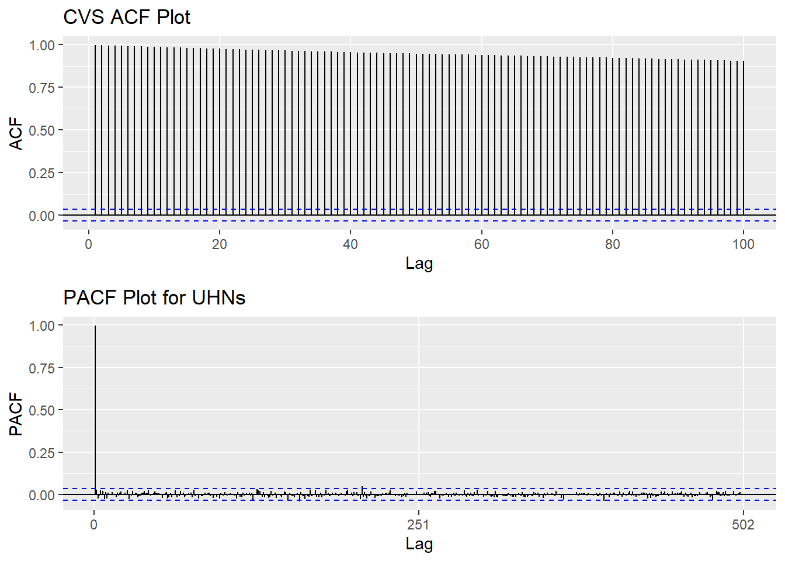
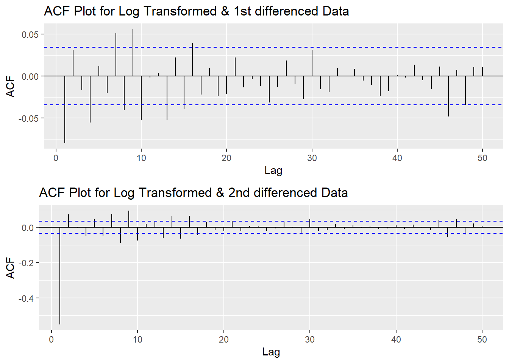
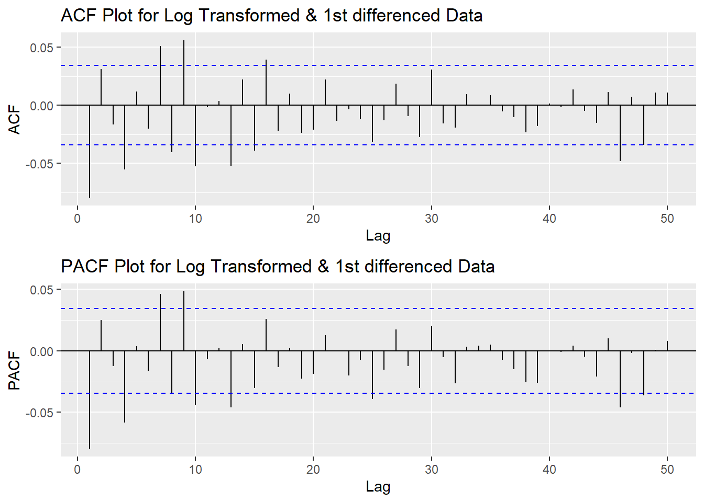
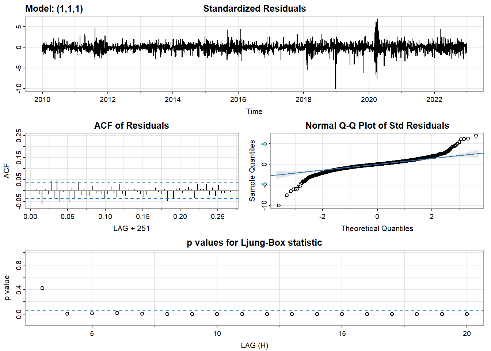
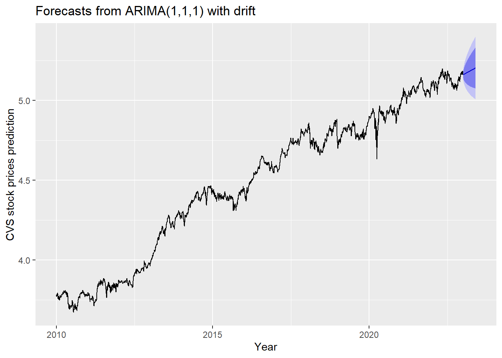
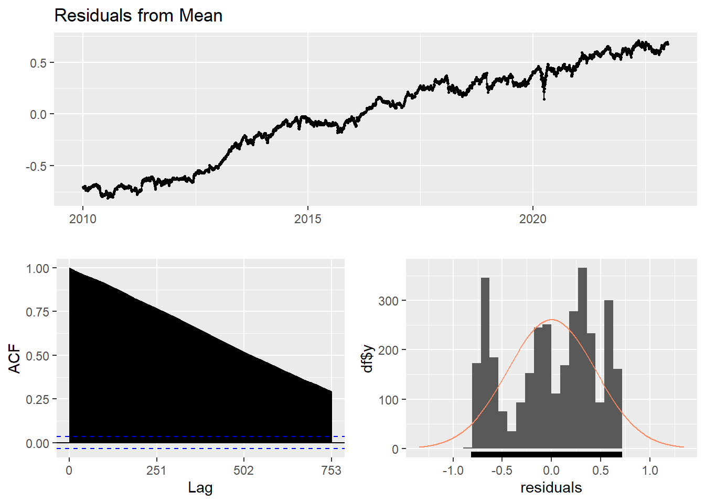
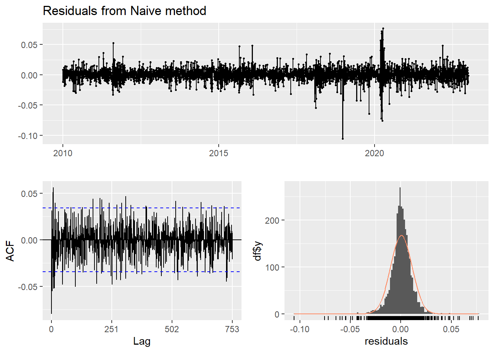
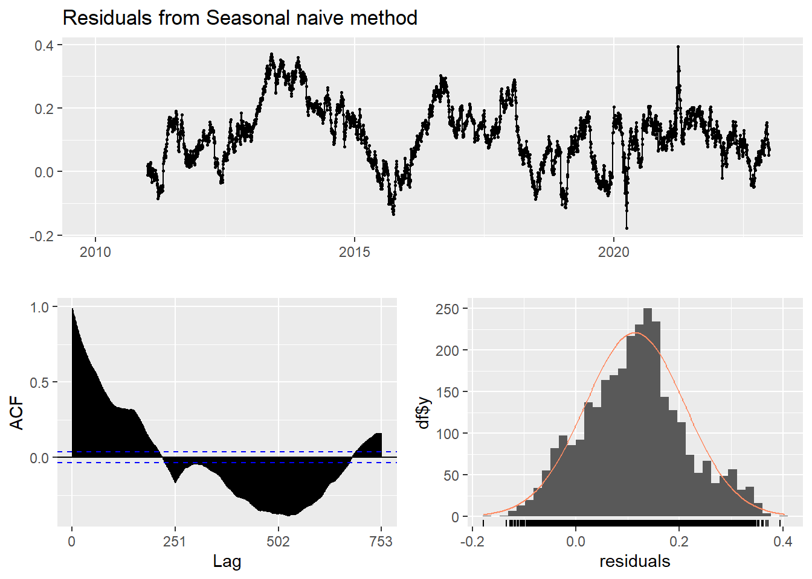
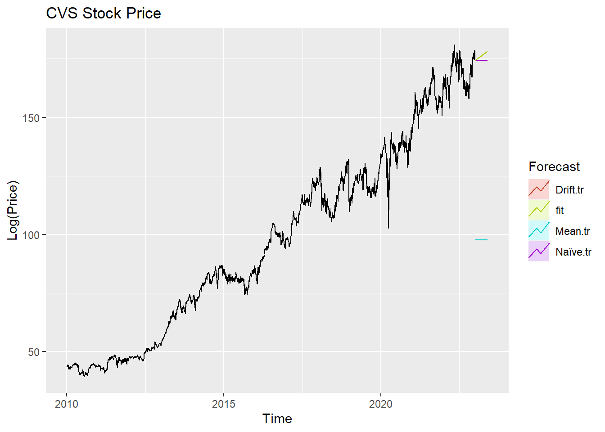

ARMA/ARIMA/SARIMA Models for CVS
Step 1: Determine the stationality of time series
Stationality is a pre-requirement of training ARIMA model. This is because term ‘Auto Regressive’ in ARIMA means it is a linear regression model that uses its own lags as predictors, which work best when the predictors are not correlated and are independent of each other. Stationary time series make sure the statistical properties of time series do not change over time.
Based on information obtained from ACF graphs, the time series data is non-stationary, though Augmented Dickey-Fuller Test shows the series is stationary .
Show the code
CVS_acf <- ggAcf(CVS_ts,100)+ggtitle("CVS ACF Plot")
CVS_pacf <- ggPacf(CVS_ts)+ggtitle("PACF Plot for UHNs")
grid.arrange(CVS_acf, CVS_pacf,nrow=2)
Show the code
tseries::adf.test(CVS_ts)Warning in tseries::adf.test(CVS_ts): p-value smaller than printed p-value
Augmented Dickey-Fuller Test
data: CVS_ts
Dickey-Fuller = -4.5012, Lag order = 14, p-value = 0.01
alternative hypothesis: stationaryStep 2: Eliminate Non-Stationality
Since this data is non-stationary, it is important to necessary to convert it to stationary time series. This step employs a series of actions to eliminate non-stationality, i.e. log transformation and differencing the data. It turns out the log transformed and 1st differened data has shown good stationary property, there are no need to go further at 2nd differencing. What is more, the Augmented Dickey-Fuller Test also confirmed that the log transformed and 1st differenced data is stationary. Therefore, the log transformation and 1st differencing would be the actions taken to eliminate the non-stationality.
Show the code
plot1<- ggAcf(log(CVS_ts) %>%diff(), 50, main="ACF Plot for Log Transformed & 1st differenced Data")
plot2<- ggAcf(log(CVS_ts) %>%diff()%>%diff(),50, main="ACF Plot for Log Transformed & 2nd differenced Data")
grid.arrange(plot1, plot2,nrow=2)
Show the code
tseries::adf.test(log(CVS_ts) %>%diff())
Augmented Dickey-Fuller Test
data: log(CVS_ts) %>% diff()
Dickey-Fuller = -16.066, Lag order = 14, p-value = 0.01
alternative hypothesis: stationaryStep 3: Determine p,d,q Parameters
The standard notation of ARIMA(p,d,q) include p,d,q 3 parameters. Here are the representations: - p: The number of lag observations included in the model, also called the lag order; order of the AR term. - d: The number of times that the raw observations are differenced, also called the degree of differencing; number of differencing required to make the time series stationary. - q: order of moving average; order of the MA term. It refers to the number of lagged forecast errors that should go into the ARIMA Model.
Show the code
plot3<- ggPacf(log(CVS_ts) %>%diff(),50, main="PACF Plot for Log Transformed & 1st differenced Data")
grid.arrange(plot1,plot3)
According to the PACF plot and ACF plot above, both plots have significant peak at 1 and 4. Therefore, here choose the value of p and q as 1-4. Since I only differenced the data once, the d would be 1.
Step 4: Fit ARIMA(p,d,q) model
Before fitting the data with ARIMA(p,d,q) model, we will need to choose the set of parameters based on error measurement and model diagnostics. Based on the result below, ARIMA(1,1,1) has lowest error measurement.
Show the code
######################## Check for different combinations ########
d=1
i=1
temp= data.frame()
ls=matrix(rep(NA,6*15),nrow=15) # roughly nrow = 3x4x2
for (p in 2:5)# p=1,2,3,4 : 4
{
for(q in 2:5)# q=1,2,4 :4
{
for(d in 1:1)# d=1 :2
{
if(p-1+d+q-1<=8)
{
model<- Arima(log(CVS_ts),order=c(p-1,d,q-1),include.drift=TRUE)
ls[i,]= c(p-1,d,q-1,model$aic,model$bic,model$aicc)
i=i+1
#print(i)
}
}
}
}
temp= as.data.frame(ls)
names(temp)= c("p","d","q","AIC","BIC","AICc")
kable(temp) %>%
kable_styling(font_size = 12)| p | d | q | AIC | BIC | AICc |
|---|---|---|---|---|---|
| 1 | 1 | 1 | -20412.67 | -20388.31 | -20412.66 |
| 1 | 1 | 2 | -20411.13 | -20380.68 | -20411.11 |
| 1 | 1 | 3 | -20414.70 | -20378.16 | -20414.68 |
| 1 | 1 | 4 | -20424.62 | -20381.99 | -20424.59 |
| 2 | 1 | 1 | -20411.03 | -20380.57 | -20411.01 |
| 2 | 1 | 2 | -20412.17 | -20375.63 | -20412.15 |
| 2 | 1 | 3 | -20416.90 | -20374.27 | -20416.86 |
| 2 | 1 | 4 | -20423.67 | -20374.95 | -20423.63 |
| 3 | 1 | 1 | -20413.32 | -20376.78 | -20413.30 |
| 3 | 1 | 2 | -20421.63 | -20379.00 | -20421.59 |
| 3 | 1 | 3 | -20420.92 | -20372.20 | -20420.88 |
| 3 | 1 | 4 | -20421.65 | -20366.84 | -20421.60 |
| 4 | 1 | 1 | -20425.68 | -20383.04 | -20425.64 |
| 4 | 1 | 2 | -20425.19 | -20376.47 | -20425.15 |
| 4 | 1 | 3 | -20423.31 | -20368.50 | -20423.26 |
Error measurement
Lowest AIC:
Show the code
temp[which.min(temp$AIC),] p d q AIC BIC AICc
13 4 1 1 -20425.68 -20383.04 -20425.64Lowest BIC:
p d q AIC BIC AICc
1 1 1 1 -20412.67 -20388.31 -20412.66Lowest AICc:
p d q AIC BIC AICc
13 4 1 1 -20425.68 -20383.04 -20425.64Show the code
fit1 <- Arima(log(CVS_ts), order=c(1, 1, 1),include.drift = TRUE)
summary(fit1)Series: log(CVS_ts)
ARIMA(1,1,1) with drift
Coefficients:
ar1 ma1 drift
-0.3279 0.2487 4e-04
s.e. 0.1406 0.1440 2e-04
sigma^2 = 0.0001122: log likelihood = 10210.33
AIC=-20412.67 AICc=-20412.66 BIC=-20388.31
Training set error measures:
ME RMSE MAE MPE MAPE
Training set -2.07333e-06 0.01058626 0.007233617 -0.0003187543 0.1611386
MASE ACF1
Training set 0.05795515 0.001266904Model Diagnostics
- Inspection of the time plot of the standardized residuals below shows no obvious patterns.
- Notice that there may be outliers, with a few values exceeding 3 standard deviations in magnitude.
- The ACF of the standardized residuals shows no apparent departure from the model assumptions, no significant lags shown.
- The normal Q-Q plot of the residuals shows that the assumption of normality is reasonable, with the exception of the fat-tailed.
- The model appears to fit well.
Show the code
model_output <- capture.output(sarima(log(CVS_ts), 1,1,1))
Show the code
cat(model_output[20:51], model_output[length(model_output)], sep = "\n") #to get rid of the convergence status and details of the optimization algorithm used by the sarima() $fit
Call:
arima(x = xdata, order = c(p, d, q), seasonal = list(order = c(P, D, Q), period = S),
xreg = constant, transform.pars = trans, fixed = fixed, optim.control = list(trace = trc,
REPORT = 1, reltol = tol))
Coefficients:
ar1 ma1 constant
-0.3279 0.2487 4e-04
s.e. 0.1406 0.1440 2e-04
sigma^2 estimated as 0.0001121: log likelihood = 10210.33, aic = -20412.67
$degrees_of_freedom
[1] 3260
$ttable
Estimate SE t.value p.value
ar1 -0.3279 0.1406 -2.3322 0.0197
ma1 0.2487 0.1440 1.7270 0.0843
constant 0.0004 0.0002 2.4264 0.0153
$AIC
[1] -6.255798
$AICc
[1] -6.255796
$BIC
[1] -6.248332Compare with auto.arima() function
auto.arima() returns best ARIMA model according to either AIC, AICc or BIC value. The function conducts a search over possible model within the order constraints provided. However, this method is not reliable sometimes. It fits a different model than ACF/PACF plots suggest. This is because auto.arima() usually return models that are more complex as it prefers more parameters compared than to the for example BIC.
Show the code
auto.arima(log(CVS_ts))Series: log(CVS_ts)
ARIMA(1,1,1) with drift
Coefficients:
ar1 ma1 drift
-0.3279 0.2487 4e-04
s.e. 0.1406 0.1440 2e-04
sigma^2 = 0.0001122: log likelihood = 10210.33
AIC=-20412.67 AICc=-20412.66 BIC=-20388.31Step 5: Forecast
The blue part in graph below forecast the next 100 values of CVS stock price in 80% and 95% confidence level.
Show the code
log(CVS_ts) %>%
Arima(order=c(1,1,1),include.drift = TRUE) %>%
forecast(100) %>%
autoplot() +
ylab("CVS stock prices prediction") + xlab("Year")
Step 6: Compare ARIMA model with the benchmark methods
Forecasting benchmarks are very important when testing new forecasting methods, to see how well they perform against some simple alternatives.
Average method
Here, the forecast of all future values are equal to the average of the historical data. The residual plot of this method is not stationary.
Show the code
f1<-meanf(log(CVS_ts), h=251) #mean
#summary(f1)
checkresiduals(f1)#serial correlation ; Lung Box p <0.05
Ljung-Box test
data: Residuals from Mean
Q* = 1059576, df = 501, p-value < 2.2e-16
Model df: 1. Total lags used: 502Naive method
This method simply set all forecasts to be the value of the last observation. According to error measurement here, ARIMA(1,1,1) outperform the average method.
Show the code
f2<-naive(log(CVS_ts), h=11) # naive method
summary(f2)
Forecast method: Naive method
Model Information:
Call: naive(y = log(CVS_ts), h = 11)
Residual sd: 0.0106
Error measures:
ME RMSE MAE MPE MAPE MASE
Training set 0.000422012 0.01063283 0.007243782 0.009237788 0.1613226 0.0580366
ACF1
Training set -0.07974793
Forecasts:
Point Forecast Lo 80 Hi 80 Lo 95 Hi 95
2023.004 5.160358 5.146732 5.173985 5.139518 5.181198
2023.008 5.160358 5.141088 5.179629 5.130886 5.189831
2023.012 5.160358 5.136757 5.183960 5.124263 5.196454
2023.016 5.160358 5.133105 5.187611 5.118678 5.202038
2023.020 5.160358 5.129889 5.190828 5.113759 5.206958
2023.024 5.160358 5.126980 5.193736 5.109311 5.211406
2023.028 5.160358 5.124306 5.196411 5.105221 5.215496
2023.032 5.160358 5.121817 5.198900 5.101414 5.219303
2023.036 5.160358 5.119479 5.201238 5.097839 5.222878
2023.040 5.160358 5.117268 5.203449 5.094457 5.226260
2023.044 5.160358 5.115164 5.205552 5.091240 5.229477Show the code
checkresiduals(f2)#serial correlation ; Lung Box p <0.05
Ljung-Box test
data: Residuals from Naive method
Q* = 624.58, df = 502, p-value = 0.0001515
Model df: 0. Total lags used: 502Seasonal naive method
This method is useful for highly seasonal data, which can set each forecast to be equal to the last observed value from the same season of the year. Here seasonal naive is used to forecast the next 4 values for the CVS stock price series.
Show the code
f3<-snaive(log(CVS_ts), h=4) #seasonal naive method
summary(f3)
Forecast method: Seasonal naive method
Model Information:
Call: snaive(y = log(CVS_ts), h = 4)
Residual sd: 0.1493
Error measures:
ME RMSE MAE MPE MAPE MASE ACF1
Training set 0.1139911 0.1493498 0.124814 2.528258 2.771018 1 0.9873504
Forecasts:
Point Forecast Lo 80 Hi 80 Lo 95 Hi 95
2023.004 5.086149 4.894750 5.277549 4.793429 5.378870
2023.008 5.090446 4.899047 5.281846 4.797726 5.383166
2023.012 5.092350 4.900950 5.283749 4.799630 5.385070
2023.016 5.100754 4.909355 5.292154 4.808034 5.393474Show the code
checkresiduals(f3) #serial correlation ; Lung Box p <0.05
Ljung-Box test
data: Residuals from Seasonal naive method
Q* = 198350, df = 502, p-value < 2.2e-16
Model df: 0. Total lags used: 502Drift Method
A variation on the naïve method is to allow the forecasts to increase or decrease over time, where the amount of change over time is set to be the average change seen in the historical data.
Show the code
f4 <- rwf(log(CVS_ts),drift=TRUE, h=20)
summary(f4)
Forecast method: Random walk with drift
Model Information:
Call: rwf(y = log(CVS_ts), h = 20, drift = TRUE)
Drift: 4e-04 (se 2e-04)
Residual sd: 0.0106
Error measures:
ME RMSE MAE MPE MAPE
Training set 1.597791e-16 0.01062445 0.007236045 -0.0002628975 0.1611678
MASE ACF1
Training set 0.05797461 -0.07974793
Forecasts:
Point Forecast Lo 80 Hi 80 Lo 95 Hi 95
2023.004 5.160780 5.147160 5.174400 5.139950 5.181610
2023.008 5.161202 5.141938 5.180467 5.131740 5.190665
2023.012 5.161624 5.138027 5.185222 5.125535 5.197714
2023.016 5.162046 5.134794 5.189299 5.120367 5.203725
2023.020 5.162468 5.131995 5.192942 5.115863 5.209074
2023.024 5.162890 5.129503 5.196278 5.111829 5.213952
2023.028 5.163312 5.127244 5.199381 5.108151 5.218474
2023.032 5.163734 5.125170 5.202299 5.104755 5.222714
2023.036 5.164156 5.123247 5.205066 5.101590 5.226723
2023.040 5.164578 5.121449 5.207708 5.098618 5.230539
2023.044 5.165001 5.119759 5.210242 5.095810 5.234191
2023.048 5.165423 5.118162 5.212683 5.093144 5.237701
2023.052 5.165845 5.116647 5.215042 5.090603 5.241086
2023.056 5.166267 5.115204 5.217329 5.088173 5.244360
2023.060 5.166689 5.113826 5.219551 5.085842 5.247535
2023.064 5.167111 5.112506 5.221715 5.083600 5.250621
2023.068 5.167533 5.111239 5.223827 5.081438 5.253627
2023.072 5.167955 5.110020 5.225889 5.079351 5.256558
2023.076 5.168377 5.108845 5.227908 5.077331 5.259422
2023.080 5.168799 5.107711 5.229886 5.075374 5.262224Show the code
checkresiduals(f4)
Ljung-Box test
data: Residuals from Random walk with drift
Q* = 624.58, df = 501, p-value = 0.0001346
Model df: 1. Total lags used: 502Show the code
autoplot(CVS_ts) +
autolayer(meanf(CVS_ts, h=100),
series="Mean.tr", PI=FALSE) +
autolayer(naive((CVS_ts), h=100),
series="Naïve.tr", PI=FALSE) +
autolayer(rwf((CVS_ts), drift=TRUE, h=100),
series="Drift.tr", PI=FALSE) +
autolayer(forecast(Arima((CVS_ts), order=c(1, 1, 1),include.drift = TRUE),100),
series="fit",PI=FALSE) +
ggtitle("CVS Stock Price") +
xlab("Time") + ylab("Log(Price)") +
guides(colour=guide_legend(title="Forecast"))
According to the graph above, ARIMA(1,1,1) outperform most of benchmark method, though its performance is very similar to drift method.